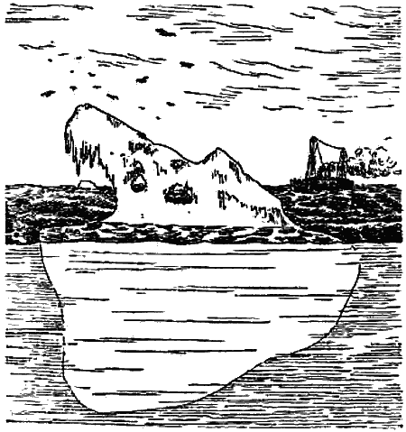
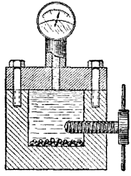
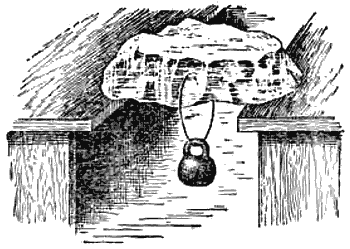

Почему лёд не тонет в воде?

В том, что лёд плавает на воде, никто не сомневается; каждый это видел сотни раз и на пруду, и на реке.
Но многие ли задумывались над таким вопросом: все ли твёрдые вещества ведут себя так же, как лёд, то есть плавают в жидкостях, образовавшихся при их плавлении?
Расплавьте в банке парафин или воск и бросьте в эту жидкость ещё кусочек того же твёрдого вещества, он тотчас же потонет. То же произойдёт и со свинцом и с оловом, и со многими другими веществами. Оказывается, как правило, твёрдые тела всегда тонут в жидкостях, которые образуются при их плавлении.
Обращаясь чаще всего с водой, мы так привыкли к обратному явлению, что нередко забываем это характерное для всех других веществ свойство. Надо помнить, что вода в этом отношении представляет редкое исключение. Только металл висмут и чугун ведут себя так же, как и вода.
Если бы лёд был тяжелее воды и не удерживался бы на её поверхности, а тонул, то даже в глубоких водоёмах вода замерзала бы зимой целиком. В самом: деле, падающий на дно пруда лёд вытеснял бы нижние слои воды вверх, и это происходило бы до тех пор, пока вся вода не превратилась в лёд.
Однако при замерзании воды происходит совсем обратная картина. В тот момент, когда вода превращается в лёд, объём её внезапно увеличивается примерно на 10 процентов, и лёд оказывается менее плотным, чем вода. Поэтому-то он и плавает в воде, как плавает любое тело в жидкости, имеющей большую плотность: железный гвоздь в ртути, пробка в масле и т. д. Если считать плотность воды равной единице, то плотность льда будет составлять только 0,91. Эта цифра позволяет нам узнать толщину плывущей по воде льдины. Если высота льдины над водой равна, например, 2 сантиметрам, то мы можем заключить, что подводный слой льдины в 9 раз толще, то есть равен 18 сантиметрам, а вся льдина имеет 20 сантиметров толщины.
В морях и океанах встречаются иногда огромные ледяные горы — айсберги (рис. 4). Это сползшие с полярных гор и унесённые течением и ветром в открытое море ледники. Высота их может достигать 200 метров, а объём — нескольких миллионов кубических метров. Девять десятых всей массы айсберга спрятаны под водой. Поэтому встреча с ним весьма опасна. Если судно вовремя не заметит движущегося ледяного гиганта, оно может при столкновении получить серьёзные повреждения или даже погибнуть.

Рис. 4. Девять десятых массы айсберга находятся под водой.
Внезапное увеличение объёма при переходе жидкой коды в лёд представляет важную особенность воды. С этой особенностью приходится часто считаться в практической жизни. Если оставить бочку с водой на морозе, то вода, замёрзнув, разорвёт бочку. По этой же причине нельзя оставлять воду в радиаторе автомобиля, стоящего в холодном гараже. В сильные морозы нужно опасаться малейшего перерыва в подаче тёплой воды по трубам водяного отопления: вода, остановившаяся в наружной трубе, может быстро замёрзнуть, и тогда труба лопнет.
Замерзая в трещинах скал, вода нередко является причиной горных обвалов.
Рассмотрим теперь один опыт, который имеет прямое отношение к расширению воды при нагревании. Постановка этого опыта требует специального оборудования, и вряд ли кто из читателей может его воспроизвести в домашней обстановке. Да это и не является необходимостью; опыт легко себе представить, а его результаты мы постараемся подтвердить на хорошо знакомых для каждого примерах.
Возьмём очень крепкий металлический, лучше всего стальной цилиндр (рис. 5), насыплем на дно его немного дроби, наполним водой, укрепим крышку болтами и станем поворачивать винт. Так как вода сжимается очень мало, то долго крутить винт не придётся. Уже после нескольких оборотов давление внутри цилиндра поднимается до сотен атмосфер. Если теперь цилиндр охладить даже на 2–3 градуса ниже нуля, то вода в нём не замёрзнет. Но как в этом убедиться? Если открыть цилиндр, то при такой температуре и атмосферном давлении вода моментально превратится в лёд, и мы не будем знать, была ли она жидкой или твёрдой, когда находилась под давлением. Здесь нам помогут насыпанные дробинки. Когда цилиндр остужен, перевернём его вверх дном. Если вода замёрзла, дробь будет лежать на дне, если не замёрзла, дробь соберётся у крышки. Открутим винт. Давление упадёт, и вода обязательно замёрзнет. Сняв крышку, мы убеждаемся, что вся дробь собралась около крышки. Значит, действительно вода, находящаяся под давлением, не замерзала при температуре ниже нуля.

Рис. 5.
Опыт показывает, что температура замерзания воды с увеличением давления понижается примерно на один градус на каждые 130 атмосфер.
Если бы мы стали строить свои рассуждения на основании наблюдений над множеством других веществ, то должны были бы прийти к обратному выводу. Давление обычно помогает жидкостям затвердевать: под давлением жидкости замерзают при более высокой температуре, и удивляться тут нечему, если вспомнить, что большинство веществ при застывании уменьшается в объёме. Давление вызывает уменьшение объёма и этим облегчает переход жидкости в твёрдое состояние. Вода же при застывании, как мы уже знаем, не уменьшается в объёме, а наоборот, расширяется. Поэтому-то давление, препятствуя расширению воды, понижает температуру её замерзания.

Рис. 6. Давление понижает температуру плавления льда.
Известно, что в океанах на больших глубинах температура воды ниже нуля градусов, и тем не менее вода на этих глубинах не замерзает. Объясняется это давлением, которое создают верхние слои воды. Слой воды толщиной в один километр давит с силой около ста атмосфер.
Будь вода нормальной жидкостью, мы вряд ли бы испытывали удовольствие от катанья на коньках по льду. Это было бы то же самое, что и катанье по совершенно гладкому стеклу. Коньки не скользят по стеклу. Совсем другое дело на льду. Кататься на коньках по льду очень легко. Почему? Под тяжестью нашего тела тонкое лезвие конька производит на лёд довольно сильное давление, и лёд под коньком тает; образуется тонкая плёнка воды, которая служит превосходной смазкой. Опыт, показанный на рисунке 6, убедительно подтверждает это. Под тонкой проволокой возникает давление, при котором лёд плавится, и проволока проходит через весь кусок. Поверх проволоки этого давления нет, и образовавшаяся вода снова застывает, спаивая куски льда вместе. Опыт этот удаётся тем лучше, чем тоньше проволока и тяжелее груз.